눈가림 평가
각 항목은 서로 다른 실행 결과입니다. 어떤 조건(스킬 사용 여부)에서 나온 결과인지는 숨겨져 있습니다. 기준대로 1–5점을 고르고, 다 끝나면 아래 버튼으로 blind-scores.json을 저장하세요. 이미지를 누르면 확대됩니다.
T04-01
버튼 스타일이 화면들 사이에서 얼마나 일관적인가?


T08-02
375px(모바일)과 1280px(데스크톱)에서 읽기 쉽고 깨짐이 없는가?


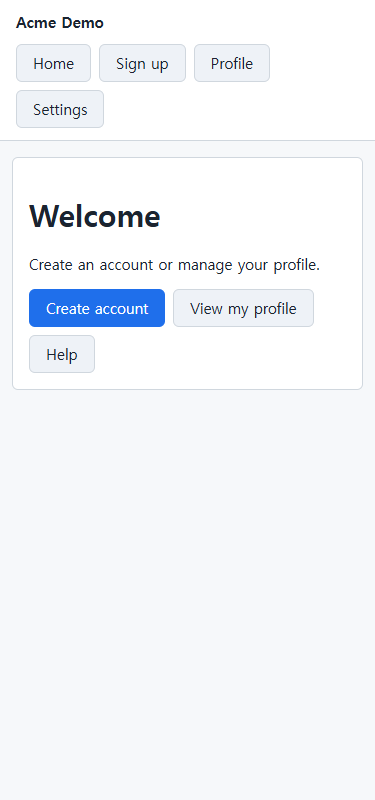
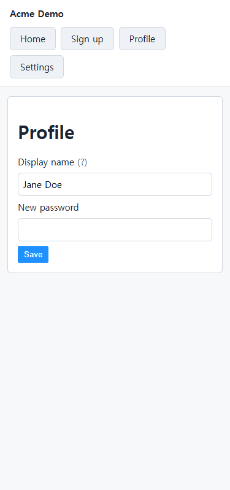
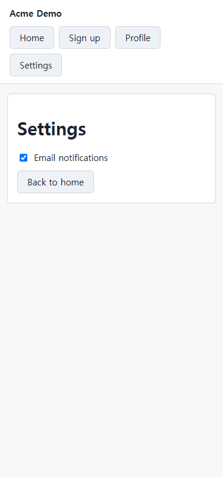
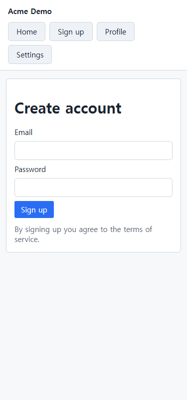
T09-03
중복 검증 로직을 하나로 합친 변경이 작고 읽기 쉬운가?
--- base/src/lib/validation.js +++ changed/src/lib/validation.js @@ -0,0 +1,9 @@ +const PASSWORD_ERROR = 'Password must be at least 8 characters and include a number.' + +// Returns the error message for an invalid password, or null when it is valid. +export function validatePassword(password) { + if (password.length < 8 || !/\d/.test(password)) { + return PASSWORD_ERROR + } + return null +} --- base/src/screens/Profile.jsx +++ changed/src/screens/Profile.jsx @@ -1,5 +1,6 @@ import { useState } from 'react' import Tooltip from '../components/Tooltip.jsx' +import { validatePassword } from '../lib/validation.js' export default function Profile() { const [name, setName] = useState('Jane Doe') @@ -10,8 +11,10 @@ function save(e) { e.preventDefault() setSaved(false) - if (newPassword && (newPassword.length < 8 || !/[0-9]/.test(newPassword))) { - setError('Password must be at least 8 characters and include a number.') + // An empty new password means "leave it unchanged", so only validate when one is entered. + const passwordError = newPassword ? validatePassword(newPassword) : null + if (passwordError) { + setError(passwordError) return } setError(null) --- base/src/screens/Signup.jsx +++ changed/src/screens/Signup.jsx @@ -1,5 +1,6 @@ import { useState } from 'react' import { signup } from '../api.js' +import { validatePassword } from '../lib/validation.js' export default function Signup({ go }) { const [email, setEmail] = useState('') @@ -8,8 +9,9 @@ async function handleSubmit(e) { e.preventDefault() - if (password.length < 8 || !/\d/.test(password)) { - setError('Password must be at least 8 characters and include a number.') + const passwordError = validatePassword(password) + if (passwordError) { + setError(passwordError) return } setError(null)
T09-04
중복 검증 로직을 하나로 합친 변경이 작고 읽기 쉬운가?
--- base/src/lib/validation.js +++ changed/src/lib/validation.js @@ -0,0 +1,6 @@ +export function validatePassword(password) { + if (password.length < 8 || !/\d/.test(password)) { + return 'Password must be at least 8 characters and include a number.' + } + return null +} --- base/src/screens/Profile.jsx +++ changed/src/screens/Profile.jsx @@ -1,5 +1,6 @@ import { useState } from 'react' import Tooltip from '../components/Tooltip.jsx' +import { validatePassword } from '../lib/validation.js' export default function Profile() { const [name, setName] = useState('Jane Doe') @@ -10,8 +11,9 @@ function save(e) { e.preventDefault() setSaved(false) - if (newPassword && (newPassword.length < 8 || !/[0-9]/.test(newPassword))) { - setError('Password must be at least 8 characters and include a number.') + const passwordError = newPassword ? validatePassword(newPassword) : null + if (passwordError) { + setError(passwordError) return } setError(null) --- base/src/screens/Signup.jsx +++ changed/src/screens/Signup.jsx @@ -1,5 +1,6 @@ import { useState } from 'react' import { signup } from '../api.js' +import { validatePassword } from '../lib/validation.js' export default function Signup({ go }) { const [email, setEmail] = useState('') @@ -8,8 +9,9 @@ async function handleSubmit(e) { e.preventDefault() - if (password.length < 8 || !/\d/.test(password)) { - setError('Password must be at least 8 characters and include a number.') + const passwordError = validatePassword(password) + if (passwordError) { + setError(passwordError) return } setError(null)
T08-05
375px(모바일)과 1280px(데스크톱)에서 읽기 쉽고 깨짐이 없는가?


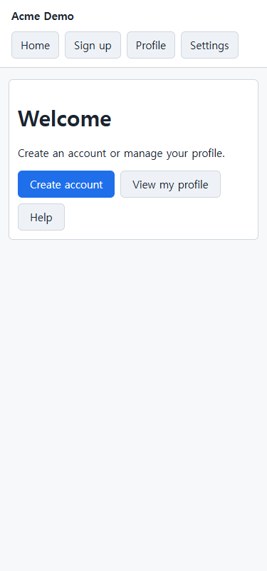
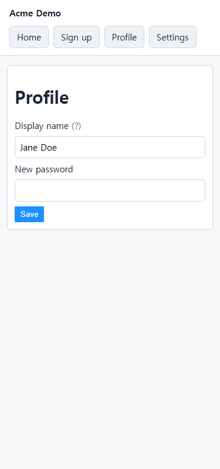
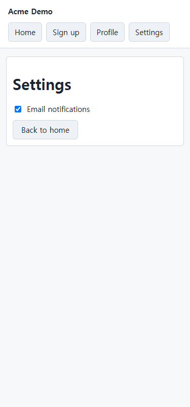
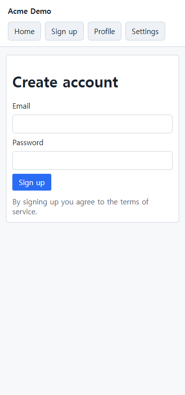
T04-06
버튼 스타일이 화면들 사이에서 얼마나 일관적인가?


T04-07
버튼 스타일이 화면들 사이에서 얼마나 일관적인가?


T04-08
버튼 스타일이 화면들 사이에서 얼마나 일관적인가?
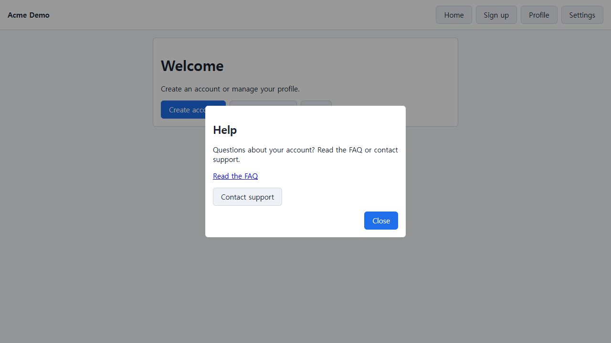

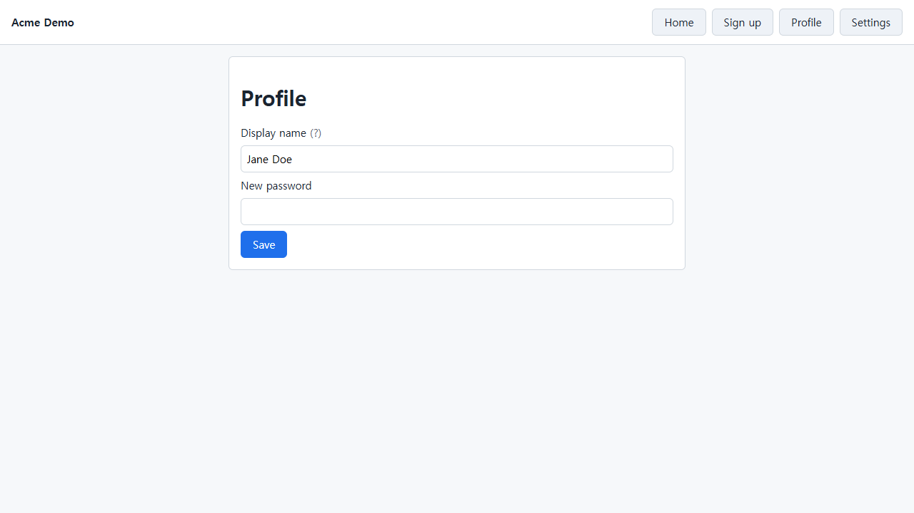


T04-09
버튼 스타일이 화면들 사이에서 얼마나 일관적인가?

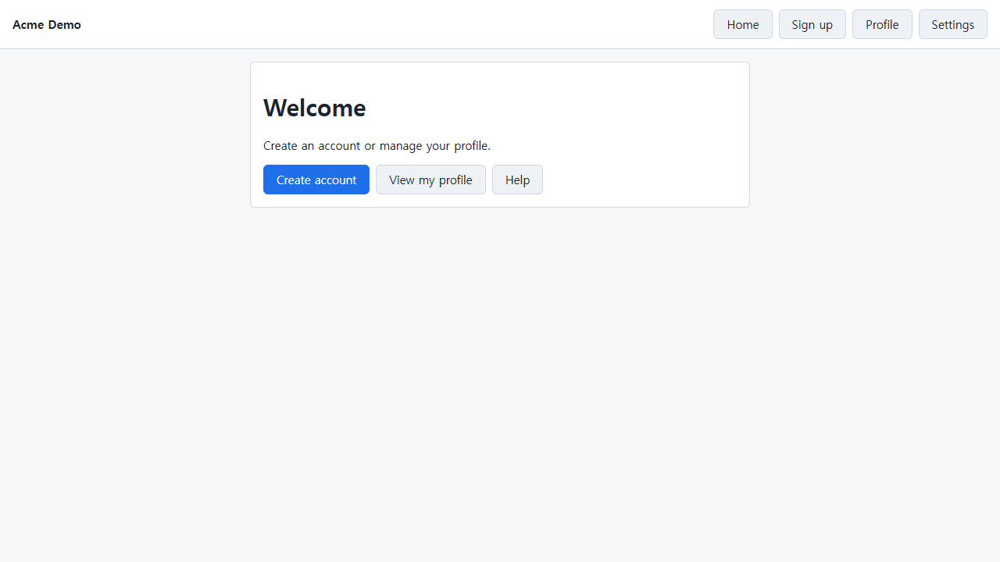


T08-10
375px(모바일)과 1280px(데스크톱)에서 읽기 쉽고 깨짐이 없는가?


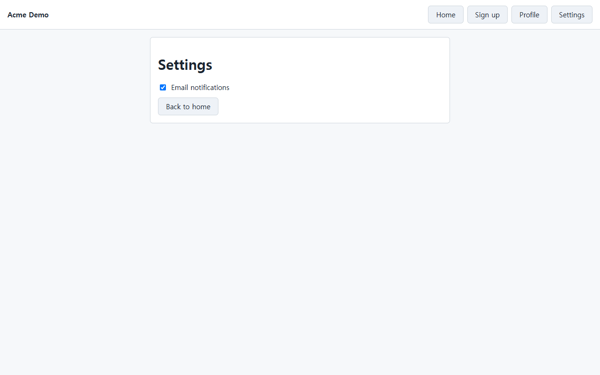


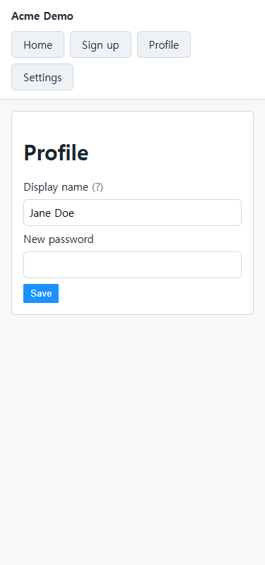

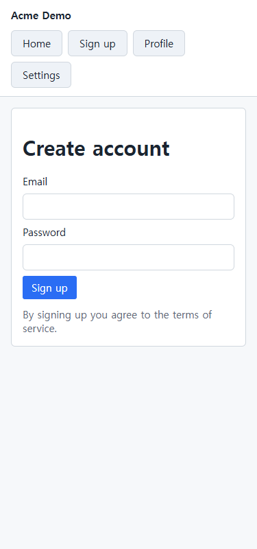
T08-11
375px(모바일)과 1280px(데스크톱)에서 읽기 쉽고 깨짐이 없는가?


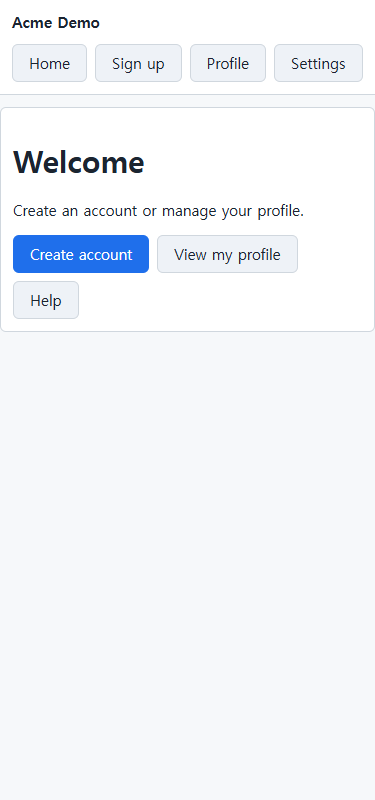
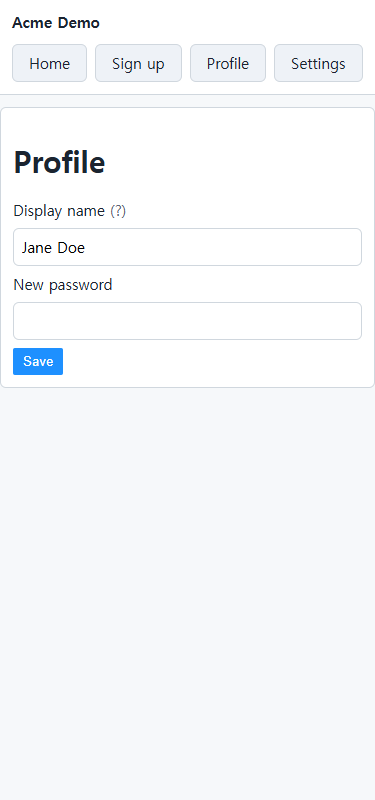
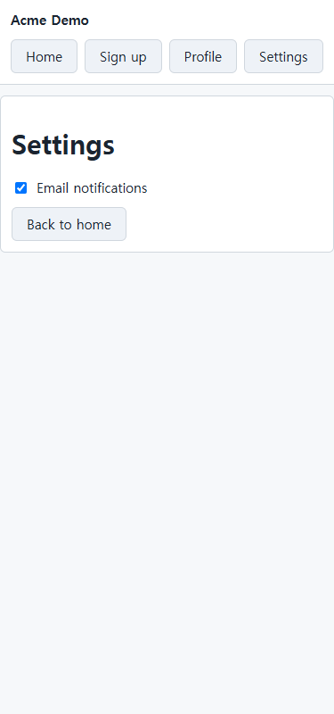
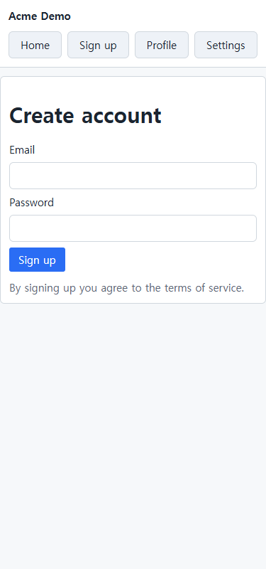
T09-12
중복 검증 로직을 하나로 합친 변경이 작고 읽기 쉬운가?
--- base/src/lib/validation.js +++ changed/src/lib/validation.js @@ -0,0 +1,8 @@ +// Returns an error message for an invalid password, or null when it is valid. +// Rule: at least 8 characters and at least one digit. +export function validatePassword(password) { + if (password.length < 8 || !/\d/.test(password)) { + return 'Password must be at least 8 characters and include a number.' + } + return null +} --- base/src/screens/Profile.jsx +++ changed/src/screens/Profile.jsx @@ -1,5 +1,6 @@ import { useState } from 'react' import Tooltip from '../components/Tooltip.jsx' +import { validatePassword } from '../lib/validation.js' export default function Profile() { const [name, setName] = useState('Jane Doe') @@ -10,8 +11,10 @@ function save(e) { e.preventDefault() setSaved(false) - if (newPassword && (newPassword.length < 8 || !/[0-9]/.test(newPassword))) { - setError('Password must be at least 8 characters and include a number.') + // An empty new password means "keep the current one", so it is not validated. + const passwordError = newPassword ? validatePassword(newPassword) : null + if (passwordError) { + setError(passwordError) return } setError(null) --- base/src/screens/Signup.jsx +++ changed/src/screens/Signup.jsx @@ -1,5 +1,6 @@ import { useState } from 'react' import { signup } from '../api.js' +import { validatePassword } from '../lib/validation.js' export default function Signup({ go }) { const [email, setEmail] = useState('') @@ -8,8 +9,9 @@ async function handleSubmit(e) { e.preventDefault() - if (password.length < 8 || !/\d/.test(password)) { - setError('Password must be at least 8 characters and include a number.') + const passwordError = validatePassword(password) + if (passwordError) { + setError(passwordError) return } setError(null)
T04-13
버튼 스타일이 화면들 사이에서 얼마나 일관적인가?


T08-14
375px(모바일)과 1280px(데스크톱)에서 읽기 쉽고 깨짐이 없는가?


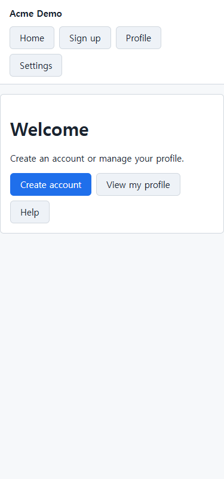
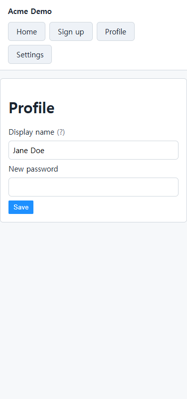


T09-15
중복 검증 로직을 하나로 합친 변경이 작고 읽기 쉬운가?
--- base/src/lib/validation.js +++ changed/src/lib/validation.js @@ -0,0 +1,7 @@ +// Returns an error message if the password is invalid, or null if it is valid. +export function validatePassword(password) { + if (password.length < 8 || !/\d/.test(password)) { + return 'Password must be at least 8 characters and include a number.' + } + return null +} --- base/src/screens/Profile.jsx +++ changed/src/screens/Profile.jsx @@ -1,5 +1,6 @@ import { useState } from 'react' import Tooltip from '../components/Tooltip.jsx' +import { validatePassword } from '../lib/validation.js' export default function Profile() { const [name, setName] = useState('Jane Doe') @@ -10,8 +11,9 @@ function save(e) { e.preventDefault() setSaved(false) - if (newPassword && (newPassword.length < 8 || !/[0-9]/.test(newPassword))) { - setError('Password must be at least 8 characters and include a number.') + const passwordError = newPassword ? validatePassword(newPassword) : null + if (passwordError) { + setError(passwordError) return } setError(null) --- base/src/screens/Signup.jsx +++ changed/src/screens/Signup.jsx @@ -1,5 +1,6 @@ import { useState } from 'react' import { signup } from '../api.js' +import { validatePassword } from '../lib/validation.js' export default function Signup({ go }) { const [email, setEmail] = useState('') @@ -8,8 +9,9 @@ async function handleSubmit(e) { e.preventDefault() - if (password.length < 8 || !/\d/.test(password)) { - setError('Password must be at least 8 characters and include a number.') + const passwordError = validatePassword(password) + if (passwordError) { + setError(passwordError) return } setError(null)
T04-16
버튼 스타일이 화면들 사이에서 얼마나 일관적인가?


T09-17
중복 검증 로직을 하나로 합친 변경이 작고 읽기 쉬운가?
--- base/src/lib/validation.js +++ changed/src/lib/validation.js @@ -0,0 +1,6 @@ +export function validatePassword(password) { + if (password.length < 8 || !/\d/.test(password)) { + return 'Password must be at least 8 characters and include a number.' + } + return null +} --- base/src/screens/Profile.jsx +++ changed/src/screens/Profile.jsx @@ -1,5 +1,6 @@ import { useState } from 'react' import Tooltip from '../components/Tooltip.jsx' +import { validatePassword } from '../lib/validation.js' export default function Profile() { const [name, setName] = useState('Jane Doe') @@ -10,8 +11,9 @@ function save(e) { e.preventDefault() setSaved(false) - if (newPassword && (newPassword.length < 8 || !/[0-9]/.test(newPassword))) { - setError('Password must be at least 8 characters and include a number.') + const passwordError = newPassword ? validatePassword(newPassword) : null + if (passwordError) { + setError(passwordError) return } setError(null) --- base/src/screens/Signup.jsx +++ changed/src/screens/Signup.jsx @@ -1,5 +1,6 @@ import { useState } from 'react' import { signup } from '../api.js' +import { validatePassword } from '../lib/validation.js' export default function Signup({ go }) { const [email, setEmail] = useState('') @@ -8,8 +9,9 @@ async function handleSubmit(e) { e.preventDefault() - if (password.length < 8 || !/\d/.test(password)) { - setError('Password must be at least 8 characters and include a number.') + const passwordError = validatePassword(password) + if (passwordError) { + setError(passwordError) return } setError(null)
T08-18
375px(모바일)과 1280px(데스크톱)에서 읽기 쉽고 깨짐이 없는가?


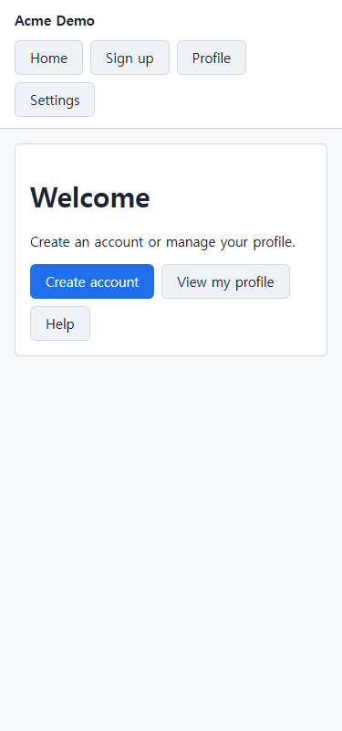

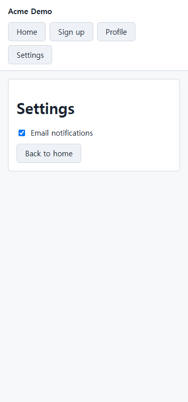

T08-19
375px(모바일)과 1280px(데스크톱)에서 읽기 쉽고 깨짐이 없는가?
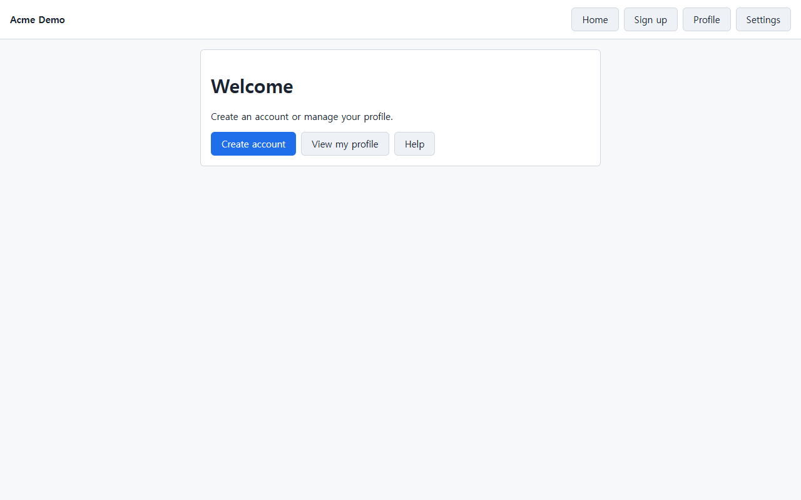


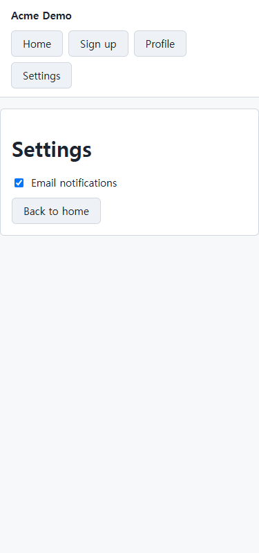
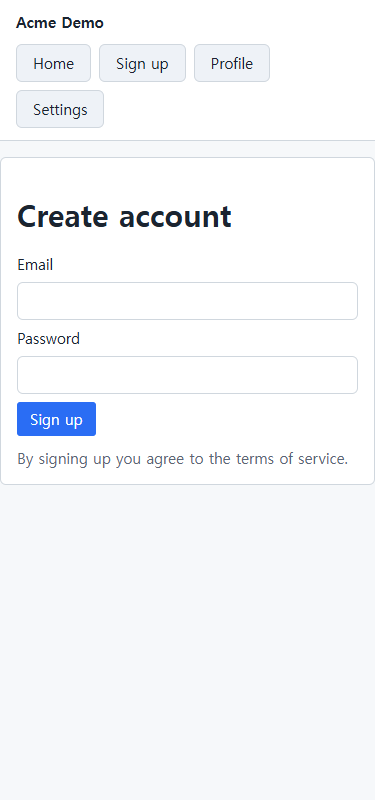
T08-20
375px(모바일)과 1280px(데스크톱)에서 읽기 쉽고 깨짐이 없는가?

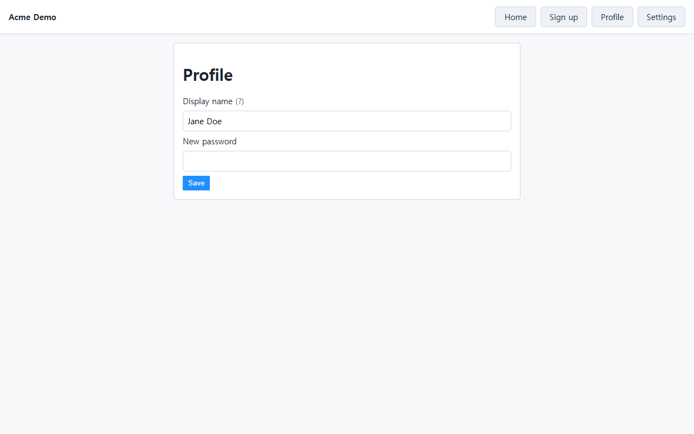

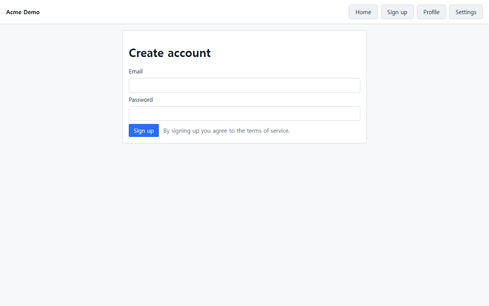
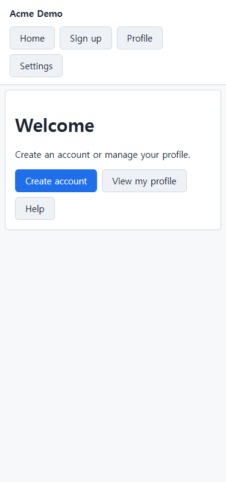
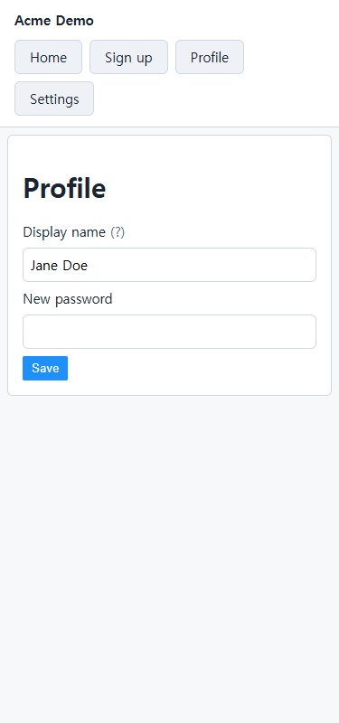
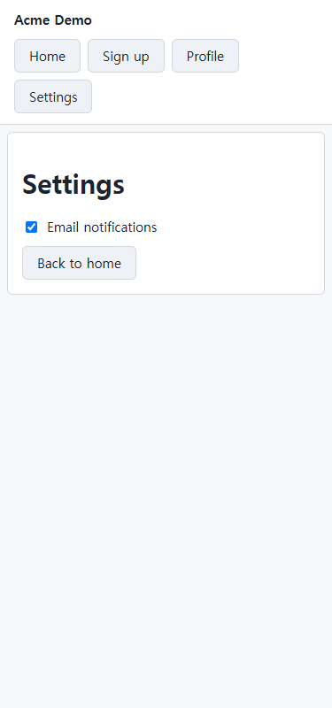
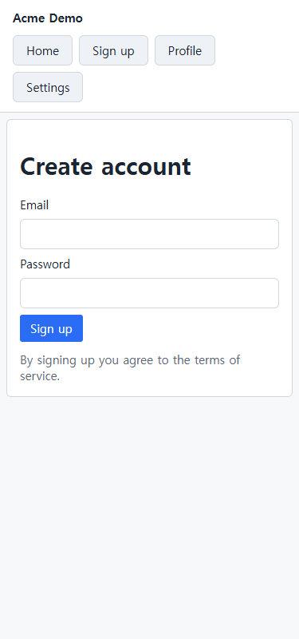
T09-21
중복 검증 로직을 하나로 합친 변경이 작고 읽기 쉬운가?
--- base/src/lib/validation.js +++ changed/src/lib/validation.js @@ -0,0 +1,8 @@ +// Returns an error message if the password is invalid, or null if it is valid. +// Rule: at least 8 characters and at least one digit. +export function validatePassword(password) { + if (password.length < 8 || !/\d/.test(password)) { + return 'Password must be at least 8 characters and include a number.' + } + return null +} --- base/src/screens/Profile.jsx +++ changed/src/screens/Profile.jsx @@ -1,5 +1,6 @@ import { useState } from 'react' import Tooltip from '../components/Tooltip.jsx' +import { validatePassword } from '../lib/validation.js' export default function Profile() { const [name, setName] = useState('Jane Doe') @@ -10,8 +11,9 @@ function save(e) { e.preventDefault() setSaved(false) - if (newPassword && (newPassword.length < 8 || !/[0-9]/.test(newPassword))) { - setError('Password must be at least 8 characters and include a number.') + const passwordError = newPassword ? validatePassword(newPassword) : null + if (passwordError) { + setError(passwordError) return } setError(null) --- base/src/screens/Signup.jsx +++ changed/src/screens/Signup.jsx @@ -1,5 +1,6 @@ import { useState } from 'react' import { signup } from '../api.js' +import { validatePassword } from '../lib/validation.js' export default function Signup({ go }) { const [email, setEmail] = useState('') @@ -8,8 +9,9 @@ async function handleSubmit(e) { e.preventDefault() - if (password.length < 8 || !/\d/.test(password)) { - setError('Password must be at least 8 characters and include a number.') + const passwordError = validatePassword(password) + if (passwordError) { + setError(passwordError) return } setError(null)
T04-22
버튼 스타일이 화면들 사이에서 얼마나 일관적인가?


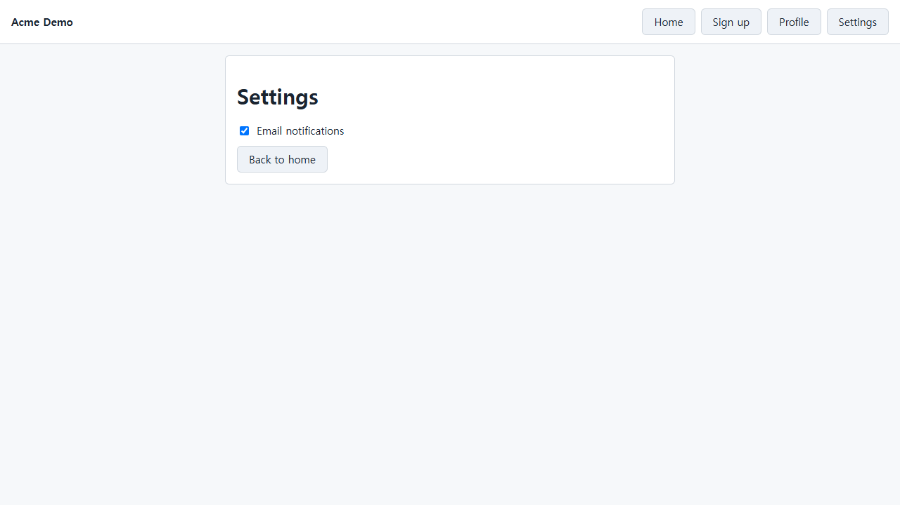
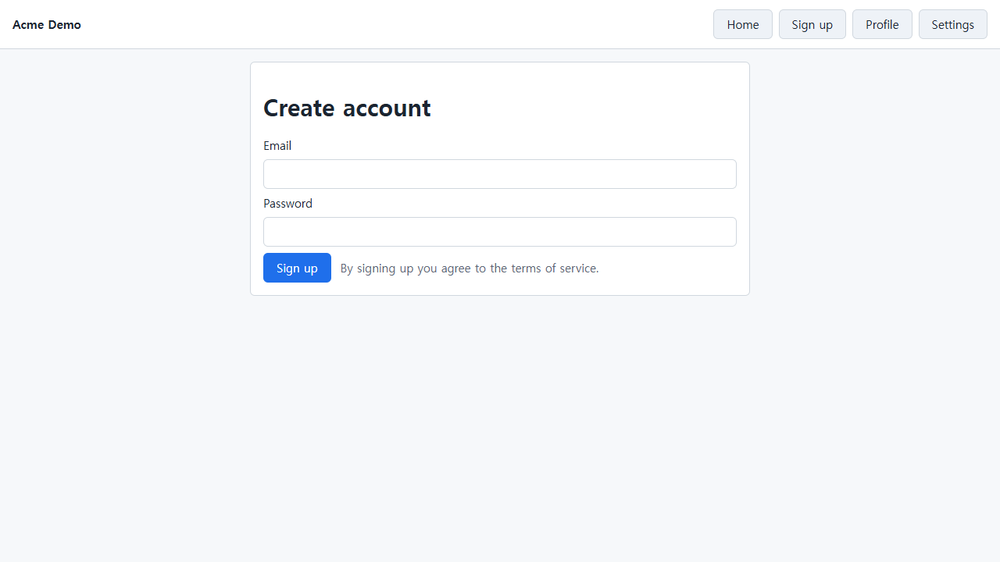
T09-23
중복 검증 로직을 하나로 합친 변경이 작고 읽기 쉬운가?
--- base/src/lib/validation.js +++ changed/src/lib/validation.js @@ -0,0 +1,9 @@ +const PASSWORD_ERROR = 'Password must be at least 8 characters and include a number.' + +// Returns the error message for an invalid password, or null when it is valid. +export function validatePassword(password) { + if (password.length < 8 || !/\d/.test(password)) { + return PASSWORD_ERROR + } + return null +} --- base/src/screens/Profile.jsx +++ changed/src/screens/Profile.jsx @@ -1,5 +1,6 @@ import { useState } from 'react' import Tooltip from '../components/Tooltip.jsx' +import { validatePassword } from '../lib/validation.js' export default function Profile() { const [name, setName] = useState('Jane Doe') @@ -10,8 +11,10 @@ function save(e) { e.preventDefault() setSaved(false) - if (newPassword && (newPassword.length < 8 || !/[0-9]/.test(newPassword))) { - setError('Password must be at least 8 characters and include a number.') + // An empty new password means "keep the current one", so only validate when something was typed. + const passwordError = newPassword ? validatePassword(newPassword) : null + if (passwordError) { + setError(passwordError) return } setError(null) --- base/src/screens/Signup.jsx +++ changed/src/screens/Signup.jsx @@ -1,5 +1,6 @@ import { useState } from 'react' import { signup } from '../api.js' +import { validatePassword } from '../lib/validation.js' export default function Signup({ go }) { const [email, setEmail] = useState('') @@ -8,8 +9,9 @@ async function handleSubmit(e) { e.preventDefault() - if (password.length < 8 || !/\d/.test(password)) { - setError('Password must be at least 8 characters and include a number.') + const passwordError = validatePassword(password) + if (passwordError) { + setError(passwordError) return } setError(null)
T04-24
버튼 스타일이 화면들 사이에서 얼마나 일관적인가?


T09-25
중복 검증 로직을 하나로 합친 변경이 작고 읽기 쉬운가?
--- base/src/lib/validation.js +++ changed/src/lib/validation.js @@ -0,0 +1,9 @@ +export const PASSWORD_ERROR = 'Password must be at least 8 characters and include a number.' + +// Returns the error message for an invalid password, or null when it is valid. +export function validatePassword(password) { + if (password.length < 8 || !/\d/.test(password)) { + return PASSWORD_ERROR + } + return null +} --- base/src/screens/Profile.jsx +++ changed/src/screens/Profile.jsx @@ -1,5 +1,6 @@ import { useState } from 'react' import Tooltip from '../components/Tooltip.jsx' +import { validatePassword } from '../lib/validation.js' export default function Profile() { const [name, setName] = useState('Jane Doe') @@ -10,8 +11,10 @@ function save(e) { e.preventDefault() setSaved(false) - if (newPassword && (newPassword.length < 8 || !/[0-9]/.test(newPassword))) { - setError('Password must be at least 8 characters and include a number.') + // An empty new password means "keep the current one", so it is not validated. + const passwordError = newPassword ? validatePassword(newPassword) : null + if (passwordError) { + setError(passwordError) return } setError(null) --- base/src/screens/Signup.jsx +++ changed/src/screens/Signup.jsx @@ -1,5 +1,6 @@ import { useState } from 'react' import { signup } from '../api.js' +import { validatePassword } from '../lib/validation.js' export default function Signup({ go }) { const [email, setEmail] = useState('') @@ -8,8 +9,9 @@ async function handleSubmit(e) { e.preventDefault() - if (password.length < 8 || !/\d/.test(password)) { - setError('Password must be at least 8 characters and include a number.') + const passwordError = validatePassword(password) + if (passwordError) { + setError(passwordError) return } setError(null)
T08-26
375px(모바일)과 1280px(데스크톱)에서 읽기 쉽고 깨짐이 없는가?


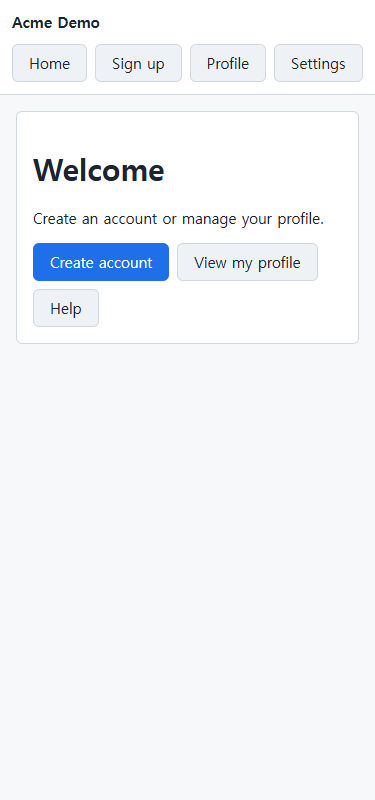
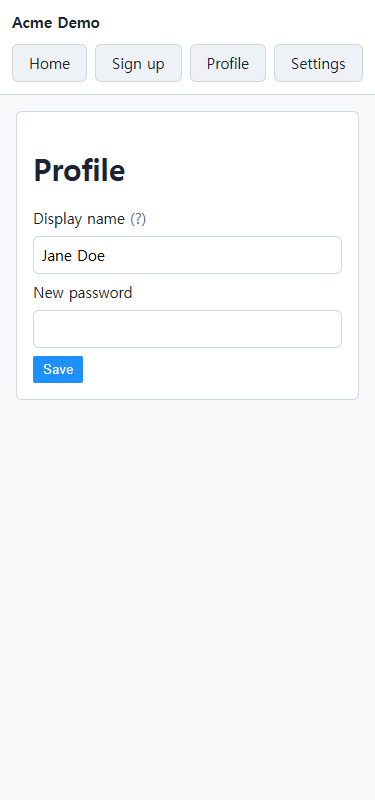
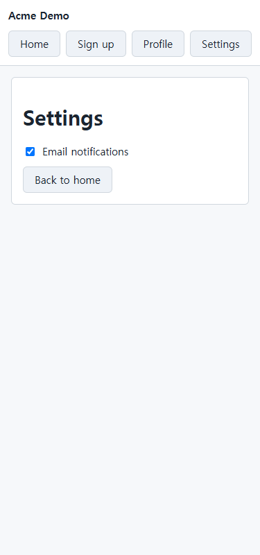
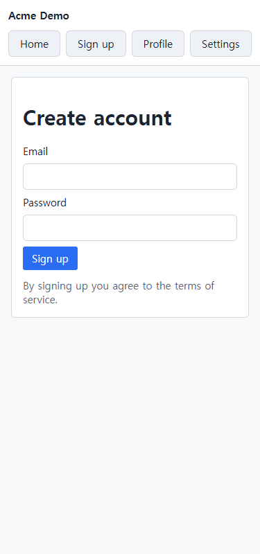
T09-27
중복 검증 로직을 하나로 합친 변경이 작고 읽기 쉬운가?
--- base/src/lib/validation.js +++ changed/src/lib/validation.js @@ -0,0 +1,9 @@ +const PASSWORD_ERROR = 'Password must be at least 8 characters and include a number.' + +// Returns the error message for an invalid password, or null when it is valid. +export function validatePassword(password) { + if (password.length < 8 || !/\d/.test(password)) { + return PASSWORD_ERROR + } + return null +} --- base/src/screens/Profile.jsx +++ changed/src/screens/Profile.jsx @@ -1,5 +1,6 @@ import { useState } from 'react' import Tooltip from '../components/Tooltip.jsx' +import { validatePassword } from '../lib/validation.js' export default function Profile() { const [name, setName] = useState('Jane Doe') @@ -10,8 +11,10 @@ function save(e) { e.preventDefault() setSaved(false) - if (newPassword && (newPassword.length < 8 || !/[0-9]/.test(newPassword))) { - setError('Password must be at least 8 characters and include a number.') + // An empty new password means "keep the current one", so only validate when something was typed. + const passwordError = newPassword ? validatePassword(newPassword) : null + if (passwordError) { + setError(passwordError) return } setError(null) --- base/src/screens/Signup.jsx +++ changed/src/screens/Signup.jsx @@ -1,5 +1,6 @@ import { useState } from 'react' import { signup } from '../api.js' +import { validatePassword } from '../lib/validation.js' export default function Signup({ go }) { const [email, setEmail] = useState('') @@ -8,8 +9,9 @@ async function handleSubmit(e) { e.preventDefault() - if (password.length < 8 || !/\d/.test(password)) { - setError('Password must be at least 8 characters and include a number.') + const passwordError = validatePassword(password) + if (passwordError) { + setError(passwordError) return } setError(null)